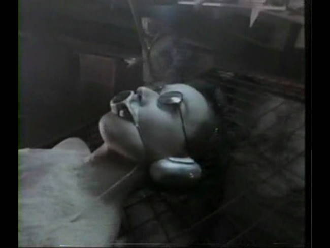
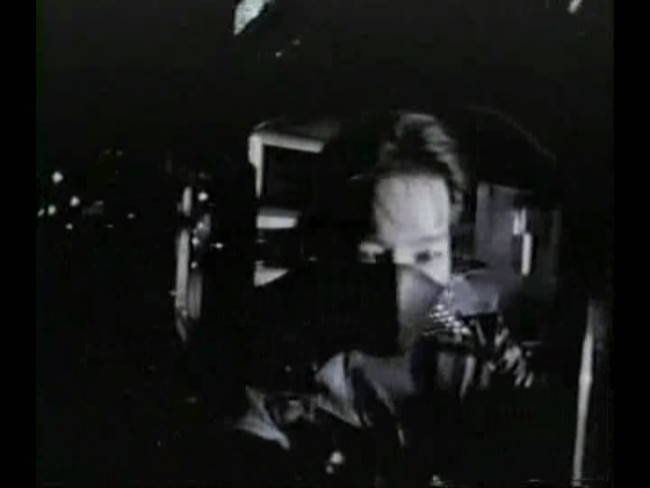
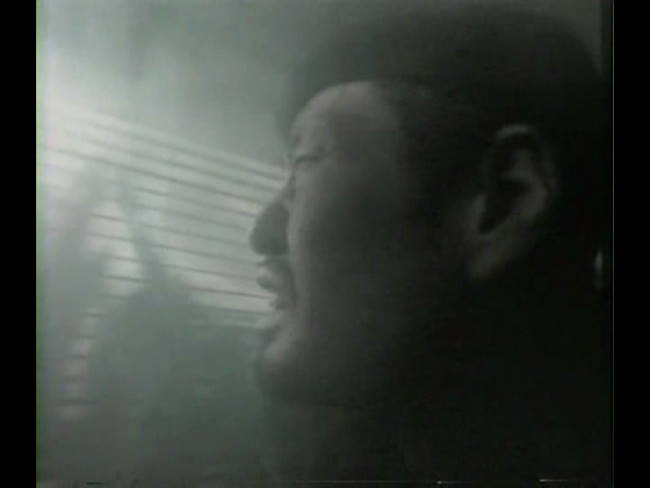
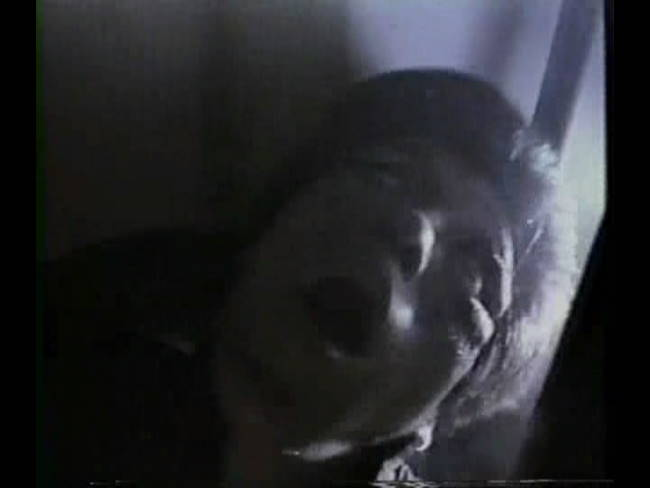
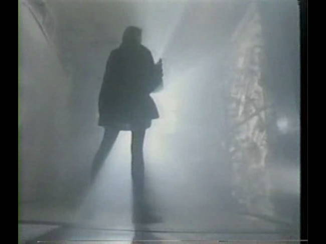
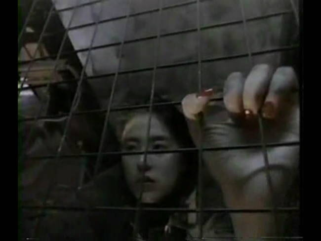
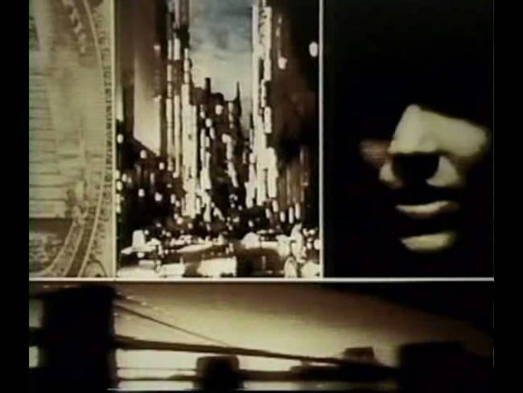
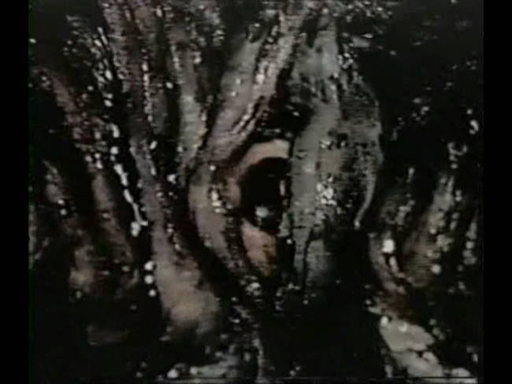
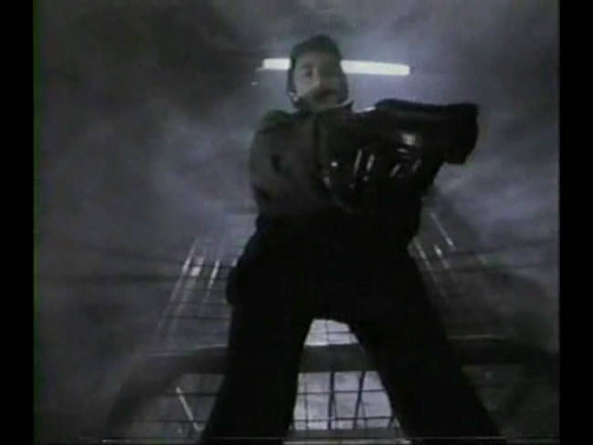
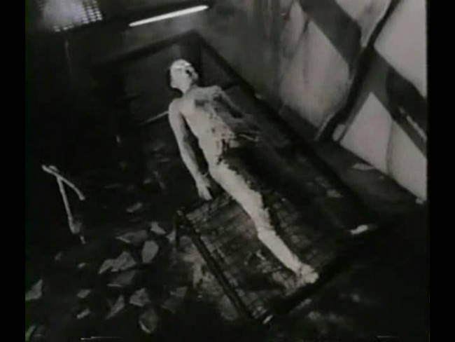

Movie review by : SFAM
Year : 1986
Directed by : Shigeru Izumiya
Written by : Shigeru Izumiya
Degree of Cyberpunk visuals : High
Correlation to Cyberpunk themes : Medium
Rating : 5/10
Key cast members :

Is there life without death?
Overview: Here I yet again delve into the world of the experimental extreme Japanese Cyberpunk ? this time to watch Death Power (Desu pawuda in Japanese). Death Powder is a very low budget, mostly incoherent extreme Japanese Cyberpunk film with some occaisionally very interesting visuals. I probably would have liked this movie more had I obtained either a decent transfer or full subtitles. All the main characters had appropriate subtitles, but the vast amount of mumbling in this film (mumbling usually occurred ultra-bizarre situations) was only subtitled in Chinese. The transfer was so bad that in some scenes the screen appears pixilated.

The Story: In the very near future, a group of three researchers has captured a very special android named Guernica (Mari Natsuki), and have brought her to a deserted warehouse, and have tied her to cot, with a protective covering over her mouth. One researcher (Izumiya) is left to guard the Guernica, but appears to be slowly going crazy. Two of the researchers, a guy (Inukai) and a girl (Murakami) apparently have just escaped (presumably from some fallout after capturing Guernica) and are on their way back to the warehouse. Murakami tries calling Izumiya and discovers that something is wrong.

They proceed carefully into the warehouse where they discover that Izumiya has gone crazy and is now trying to kill them. Izumiya makes it to Guernica, who suddenly sits up and blows dust all over Izumiya. From there, the movie turns extremely surreal. Guernica's body slowly disappears into dust, while Izumiya's face starts to expand dramatically (in a very low-budget sort of way), while Izumiya rips his hand off and Inukai shoots Izumiya with a futuristic looking gun. Things settle down with Izumiya off hallucinating, while Izumiya has somehow captured and tied Inukai to Guernica's metal cot. She gets free and beats Izumiya to a pulp.

Sometimes death is the ultimate statement.
Meanwhile, Inukai's hallucinations have provided him omniscience. Inijai proclaims, ""I understand the secrets of the flesh." He sees Guernica's origins and the ongoing struggle with the scar people, who are people who's flesh is slowly decaying on their bodies. Things get even weirder from there with visuals of massive globs of oozing puss creatures with eyes, an incoherent video montage, a fight with the scar people, and in the end, we find a very bizarre looking monster sitting in a vast setting of emptiness.

What The Fuck is This Film About??? I fully acknowledge that Death Powder is incoherent enough that attempting to interpret it will potentially lead to nonsensical ambiguity. Unlike others like Tetsuo, which CLEARLY has a point even though many claim are incoherent, this film may not simply hold together well enough to have a clear point. That being said, after two watches, it appears that the death powder is an allegory for technology's insidious and pervasive destruction of mankind. That Android chick's name, Guernica, after Picasso's famous painting, gives us the clue. She is the embodiment of humanity's destructive tendencies, and like the painting, her ultimate impact is seen with dead, injured, dismembered and torn bodies. That Geurnica is created by a rock star playing an electric guitar indicates that our technology enabled modern culture is ultimately to blame. A bastardized version Christian forbidden fruit analogy also is at play here in that a woman (android) possesses the forbidden knowledge, and humanity tries to access it by capturing her and covering her mouth. The implication is that they hope to possess the knowledge without suffering the consequences.

The other aspect that Izumiya seems to explore is the nexus between life and death. Death Powder explores competing ideologies in examining this question. Initially, we are told that "Life without flesh is death." The researcher, now fully infected and potentially dead, but still thinking (meaning his flesh is dead), responds to this thought with the following:
There is no death without life. There is no Answer to this Madness.
Heaven exists within my body...dead. But Hell...Hell is everywhere!
To which, the Android, Guernica responds, "Is there life without death?" From an android's perspective, this is probably a VERY interesting line of questioning. If you are able to think, does this not imply you are alive? But if you have no flesh ? doesn't this imply you cannot die? This is of course completely at odds with the original statement. When we include the scar people ? a faceless gang of humans losing their flesh ? as those espousing that life without flesh is death, we are left with a losing struggle where living humanity (flesh) is supplanted by our technological monstrosities our culture creates. In effect, Izumiya is espousing that humanity slowly dies as our culture is merged with technology. In the end, all that is left is this zombie-like monstrosity that is neither alive or dead, but definitely isn't human.

Disconnected Bizarre Video Montage: At about three-fourths through the 62 minute movie, Death Powder breaks into a ten minute plus video montage segment. This occurs after the death powder-enabled android chick states something to the effect that there are far more people to infect, so she must hurry. I'm guessing this is supposed to be Guernica's Destroy the World tour. This would work except that when its over, we are brought right back to the warehouse, this time to await some workers who are lured into the pit of horrors. In ending it as such, the purpose of the montage seems to disappear. In the end, we are left with the idea that director Shigeru Izumiya had also developed this cool video montage footage, and wanted to include it somewhere. It does look pretty cool though.

Life without flesh is death.
The Visuals: Like many experimental films, Izumiya literally throws in every kind of camera technique available. We get tons of perspective shots, multiple exposure shots, different overexposed lighting shots, completely strange camera angles (like a sideways up-above running shot), all wrapped up in a myriad of disturbing visuals. Whether we get coherency or not, Death Powder is certainly creative. I really wish I had been able to obtain a better copy of the film, as I'm afraid the color is washed out on Lostsilver's public domain version (although I don't know ? perhaps this is intentional). This leaves the film with a very washed out, almost (but not quite) black and white look.

The Sound: Perhaps Death Powder's best strength is in its sound effects. Izumiya continually barrages the audience with a cornucopia of industrial/techno cyberpunk sounds. We get various low-toned keyboard pieces combined with strange and eerie sounds of all types and textures. If I had to guess, I'd say the majority of the time spent on producing Death Powder was working with the sound track ? it's by far the most polished aspect of the movie. This may not be all that surprising considering Izumiya got his start composing for Japanese Cyberpunk director Sogo Ishii on Crazy Thunder Road.

The Bottom Line: I wonder if I've become jaded since watching a number of these extreme Japanese Cyberpunk flicks. Many comments about Death Powder indicate that people were blown away by the visuals and have never seen anything like this ? some to the point of even having nightmares about it. If this is your first, or perhaps even second experience in delving into extreme Japanese Cyberpunk movies, than perhaps Death Powder comes off much better. However, as much as I love the experimental visuals, this movie clearly could have been put together better. There is a lack of crafting in Death Powder which negatively impacts the movie-watching experience. Still, Death Powder, while incoherent, is at least unique, creative and interesting, so there's certainly something worth watching here. It's for this reason that I'm giving it 5 stars instead of 4. I really wish I was able to get a better transfer of this, but even if I had it, I still doubt I'd be giving it more than 5 stars.

{kind=link}
{kind=link}